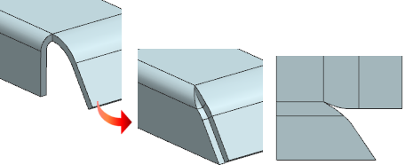
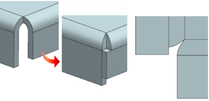
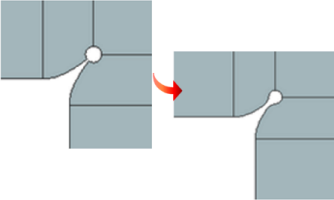

Closed Corner enhancements
Estimated time to complete this lesson: 4–6 minutes
What is it?
When you use the Closed Corner command, you can now create mitered closed corners on bends that have:
-
Unequal bend radii and angles.

-
Overlapping webs. You can now create overlapping webs with mitered corners.

-
If you select the Blend Miter check box, you can create a smooth transition from the mitered edge to the cutout edges for the following types of corner treatment options:
-
Circular Cutout
-
U Cutout
-
V Cutout
-
Rectangular Cutout
This smooth transition ensures that any jerks or jitters are avoided while tracing the tool path.

-
Where do I find it?
|
Application |
NX Sheet Metal |
|
Toolbar |
NX Sheet Metal→Corner Drop–down list→Closed Corner |
|
Menu |
Insert→Corner→Closed Corner |
|
Location in dialog box |
Corner Properties group→Blend Miter check box |